All PYQ Complete Step-by-Step Solutions
Golden Formulas
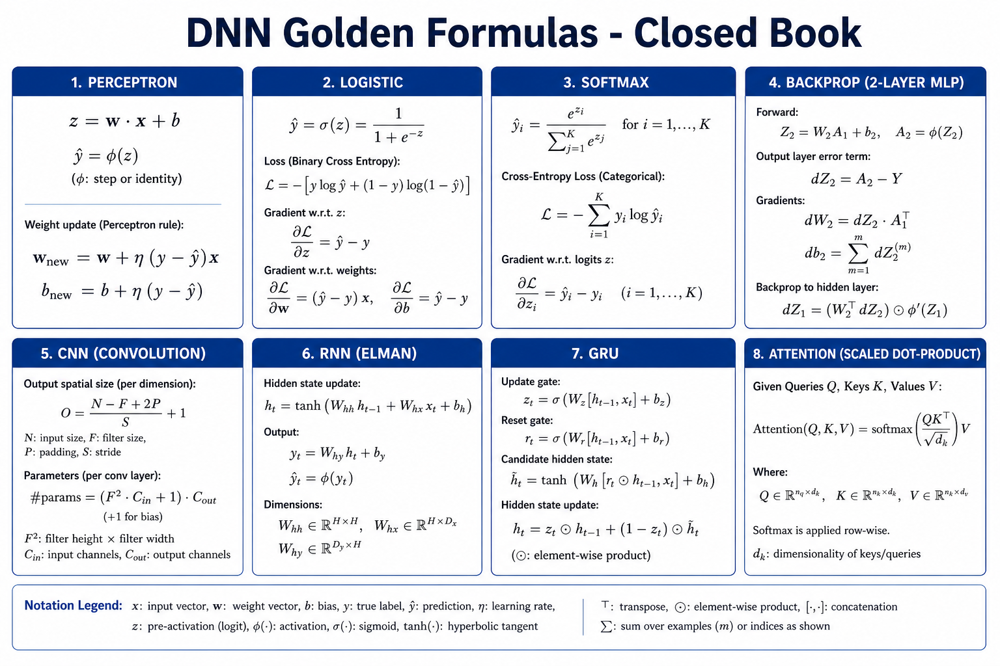
Mid QP 2024 (Closed Book, 30 marks)
Mid Q1 — MLP Design [6 marks]HIGH PRIORITY
Design minimum hidden layers/nodes for non-linear boundary. Step: +1 if sum>=threshold else -1.
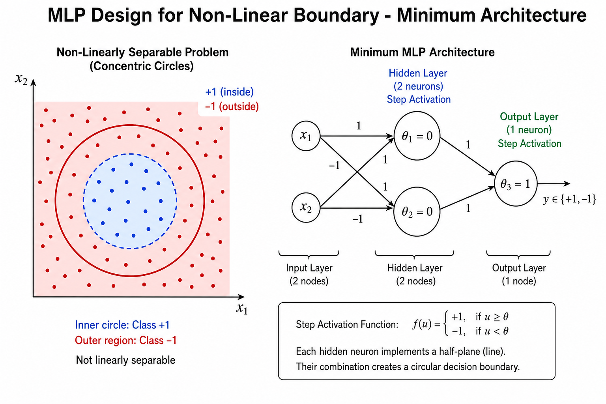
Understand
Single perceptron = ONE linear boundary. Concentric circles NOT linearly separable (XOR principle in 2D).
One line cannot separate inner +1 from outer -1 ring.
Design
Input(2) -> Hidden(2) -> Output(1) H1: inner circle detector H2: outer circle detector Output: combine for +1 inner, -1 outer
Minimum: 1 hidden layer, 2 nodes
Exam draw
Draw diagram with THRESHOLD inside each node. Show weights on connections.
Examiners want WHY hidden layer is needed.
Mid Q2 — CNN Output Shapes [5 marks]HIGH PRIORITY
(a) 8x8, 3x3 kernel, S=1, P=0. (b) 5 filters. (c) MaxPool 4x4, S=2.

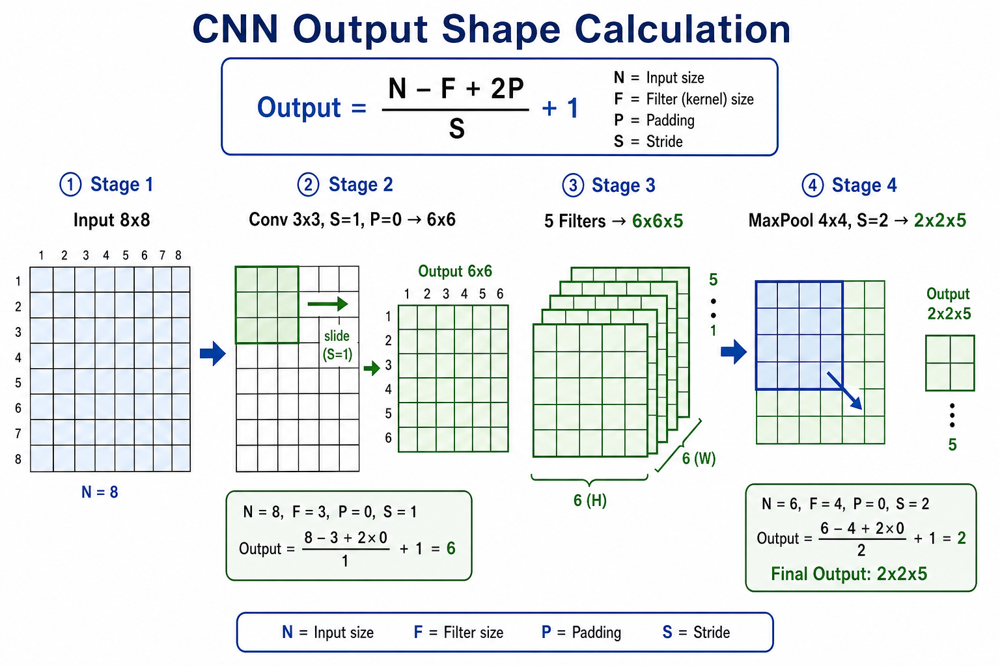
Formula
Output = (N - F + 2P) / S + 1
(a)
(8-3+0)/1+1 = 6 -> 6x6
(a) 6x6
(b)
5 filters -> 6x6x5
(b) 6x6x5
(c)
(6-4)/2+1 = 2 -> 2x2x5
(c) 2x2x5
Mid Q3 — Transfer Learning [4 marks]HIGH PRIORITY
Rakesh: scratch on 100 samples. Ram: pretrain 1M then fine-tune 100.

Compare
Rakesh: random init, 100 samples -> OVERFITTING Ram: pretrained features, fine-tune top layers
State overfitting as Rakesh problem.
Ram fixes
Pretrained edges/textures transfer. Freeze early layers, small LR.
Mid Q4 — Gradient Descent [5 marks]HIGH PRIORITY
E = 3w1^2 + 4w2^2 + 2w1w2, (0.5,0.5), eta=0.1
Gradients
dE/dw1 = 6w1+2w2 = 4 dE/dw2 = 8w2+2w1 = 5
Grad = (4,5)
Update
w1=0.5-0.4=0.1, w2=0.5-0.5=0.0
GD SUBTRACTS. Perceptron ADDS.
New w = (0.1, 0.0)
Mid Q5 — CNN vs FC [5 marks]
(a) 2 benefits of conv. (b) Training accuracy decreasing.
Benefit 1
Parameter sharing — one filter across entire image
Benefit 2
Local connectivity + translation equivariance
Acc dropping
DIVERGENCE (LR too high), NOT overfitting. Fix: reduce eta.
Overfitting = high train, low val.
Mid Q6 — Hyperparams & CNN vs ANN [5 marks]
(a) List hyperparameters. (b) Why CNN over ANN.
Hyperparams
eta, batch size, epochs, layers, neurons, activation, optimizer, dropout, L2
CNN vs ANN
2500 pixels -> 2.5M FC weights vs 27 conv params. CNN preserves spatial structure.
EC2 Mid-Sem Dec 2025 (Closed Book, 100 marks)
EC2 Q1(a) — Perceptron [6 marks]HIGH PRIORITY
w=[0.5,0.3,-0.4], x1=1, x2=2, y=1, eta=0.1
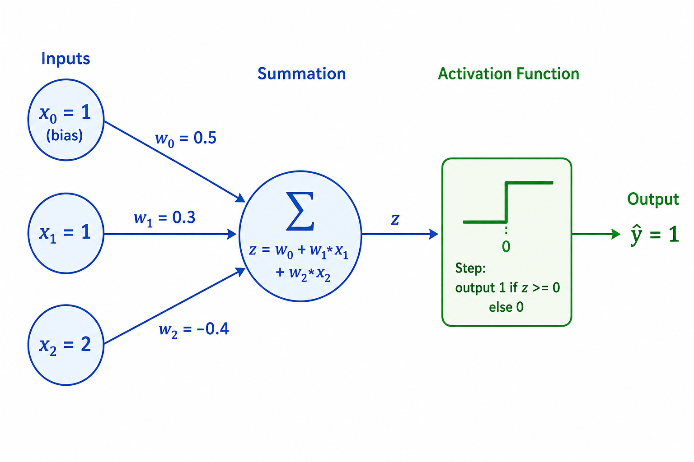

z
z = 0.5+0.3-0.8 = 0.0
z = 0.0
y_hat
z>=0 -> y_hat=1
y_hat = 1
Update
y=y_hat=1 -> CORRECT -> no update
Always check before updating!
Weights unchanged
EC2 Q1(b) Spam [6 marks]
w=[0.2,0.8,0.9,-0.5]. 75% plateau.
Spam featureLinks (0.9) highest positive weight.
Links
PlateauLinear separability ceiling. Need MLP.
EC2 Q1(c) A vs B [3 marks]
5 vs 50 features, 500 samples.
Approach A generalizes — 100 vs 10 samples/feature
EC2 Q1(d) Code [5 marks]
Perceptron blanks.
Blank1: np.dot(X[i],weights) Blank2: y[i]-y_pred Blank3: lr*error*X[i] # PLUS! Blank4: [1 if np.dot(x,w)>=0 else 0 for x in X] Blank5: np.mean(preds==y)
EC2 Q2(a) Batch GD [6 marks]HIGH PRIORITY
X=[[1,10],[1,20]], y=[150,250], w=[50,8], eta=0.01
Predict
y_hat=[130,210]
y_hat=[130,210]
MSE
MSE=1000
MSE=1000
Grad
grad=[-30,-500]
Pred too low -> increase w
Update
w=[50.30, 13.0]
New w=[50.30,13.0]
EC2 Q2(b-d)
Code, salary, normalization.
Salary=$46,000 | RMSE=$2,236 OK | Normalized features train faster
EC2 Q3(a) Logistic [6 marks]HIGH PRIORITY
w=[0,0.6,0.8], x=[1,0.7,0.5], y=1

z
z=0.82
z=0.82
sigmoid
y_hat=0.694
0.694
grad
grad=(0.694-1)*x
Golden: (y_hat-y)*x
update
w=[0.031,0.621,0.815]
EC2 Q3(c-d)
Imbalanced + fraud

Accuracy 89% but naive=95%! Deploy Model B: $7500 saved
EC2 Q4(a) Softmax [6 marks]HIGH PRIORITY
z=[2,1,0.5], y=neutral

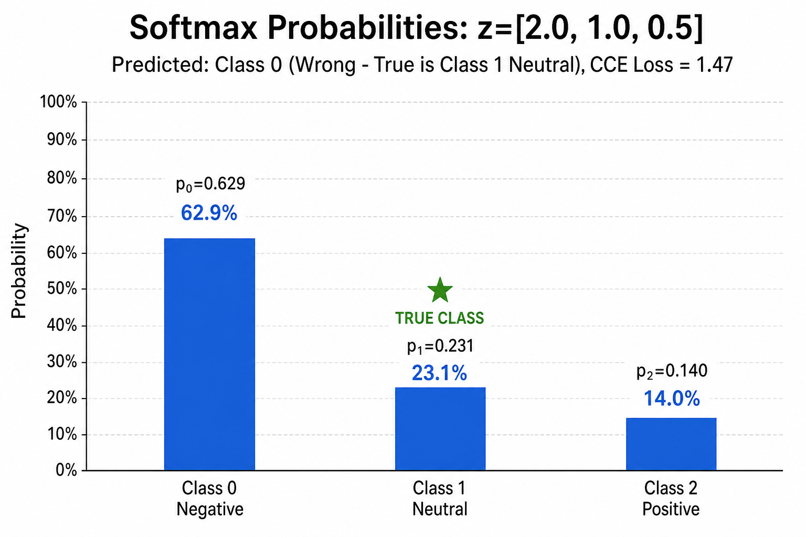
probs
p=[0.629,0.231,0.140]
loss
CCE=1.47, pred=class0 WRONG
Loss=1.47
EC2 Q4(c-d)
Bird metrics + TB
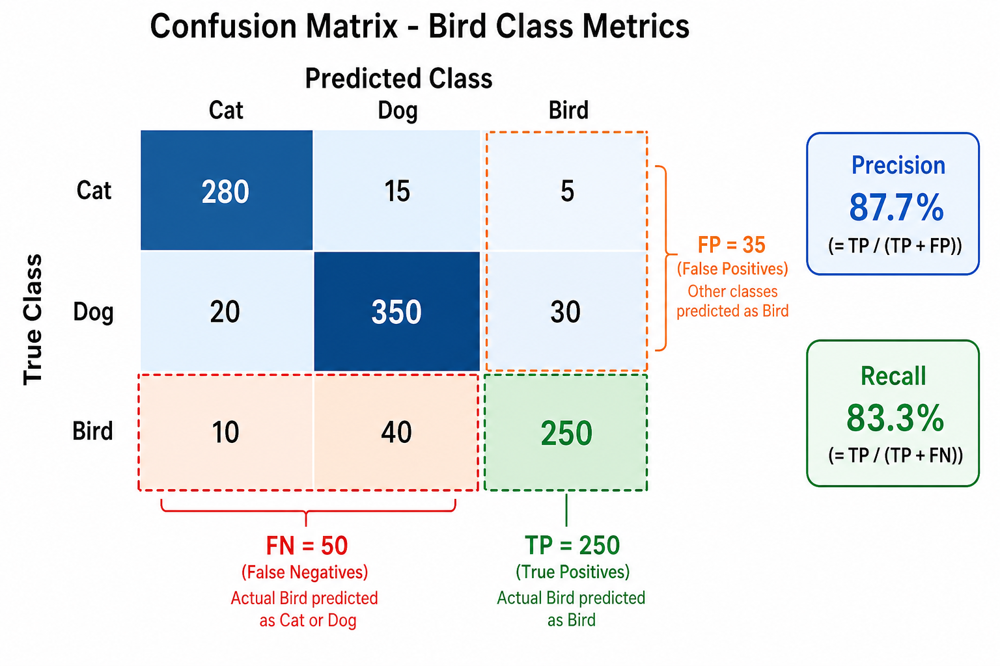
Precision=87.7%, Recall=83.3% | Deploy Model B for TB
EC2 Q5(a) DFNN Forward [6 marks]HIGH PRIORITY
x=[0.5,0.8], ReLU+sigmoid, y=1
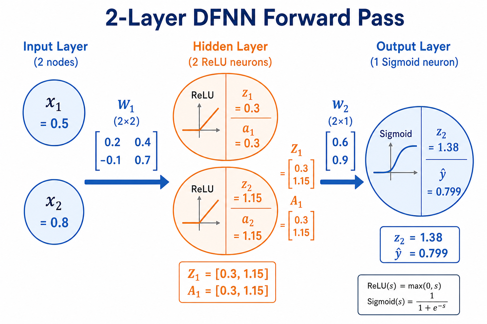

Z1
[0.3, 1.15]
Z1=[0.3,1.15]
A1
[0.3, 1.15]
Out
y_hat=0.799, BCE=0.225
Loss=0.225
EC2 Q5(b-e)
Backprop, params, mobile
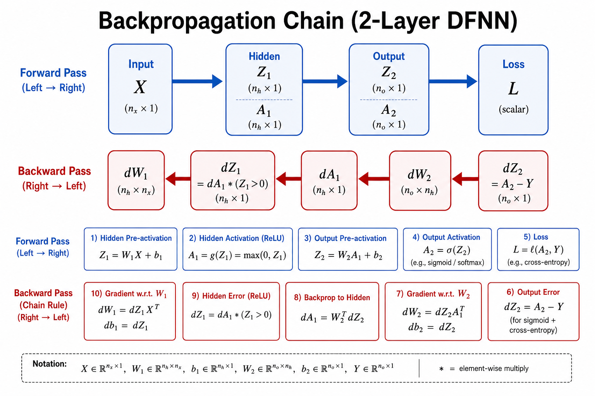
8040 params OK | Mobile->Arch A | Cloud->Arch B
EC3 Mid-Sem Mar 2026 (Open Book, 120 marks)
EC3 Q1 X-ray DFNNHIGH PRIORITY
See PDF for full question text.
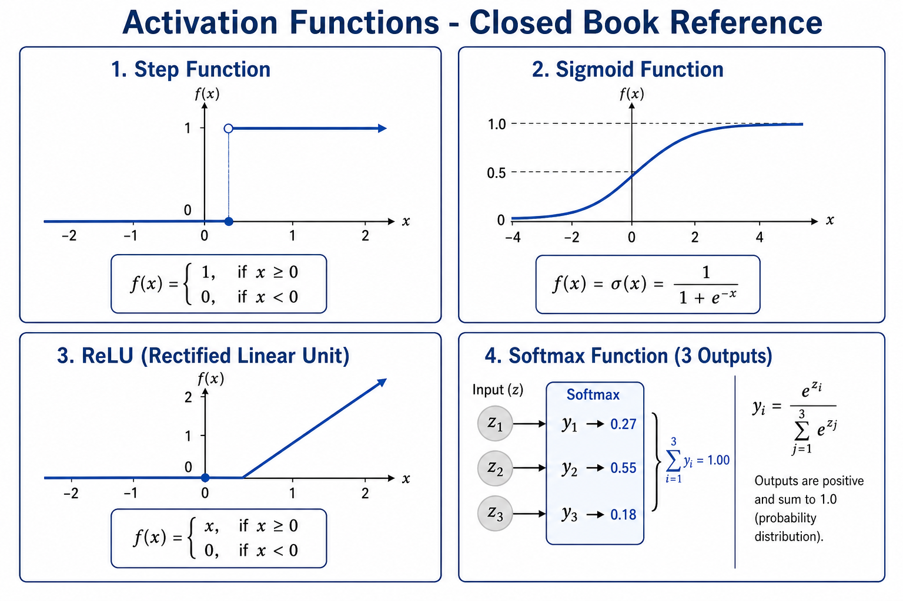
ReLU z=0.73. Softmax 10-class. Perceptron fails. Vanishing grad->ReLU+skip.
EC3 Q2 ChurnHIGH PRIORITY
See PDF for full question text.
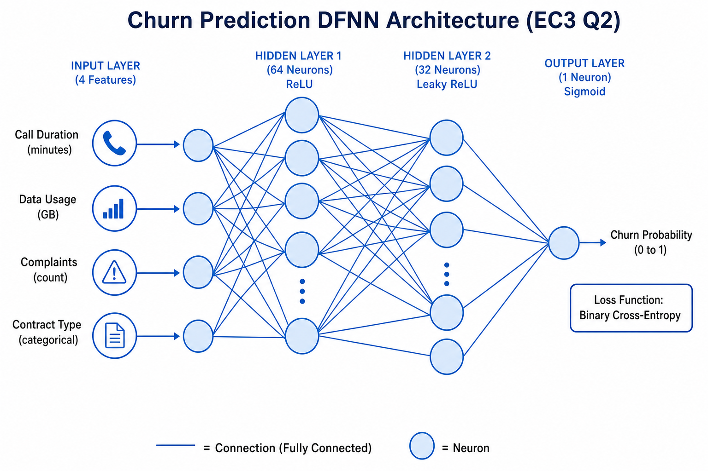
Sigmoid+BCE. P=0.73->Churn. Input(4)->H1(64,ReLU)->H2(32,LeakyReLU)->Out(1).
EC3 Q3 CNN/ResNetHIGH PRIORITY
See PDF for full question text.
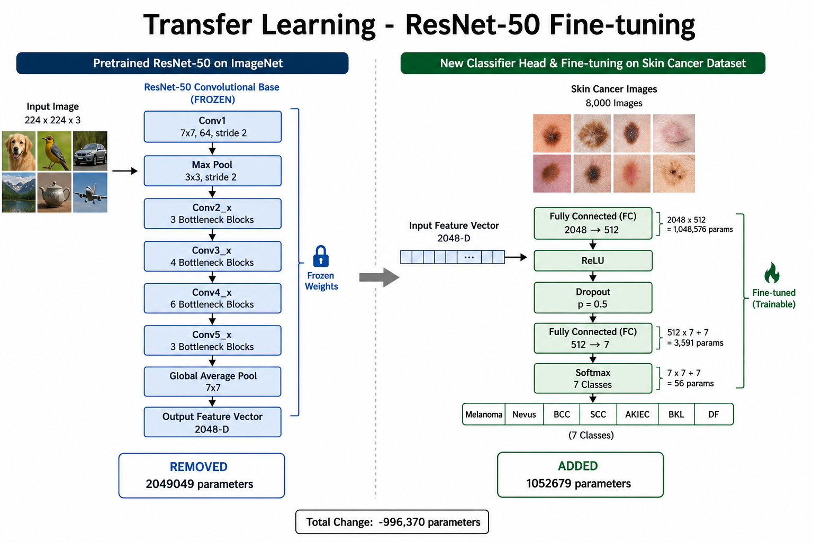
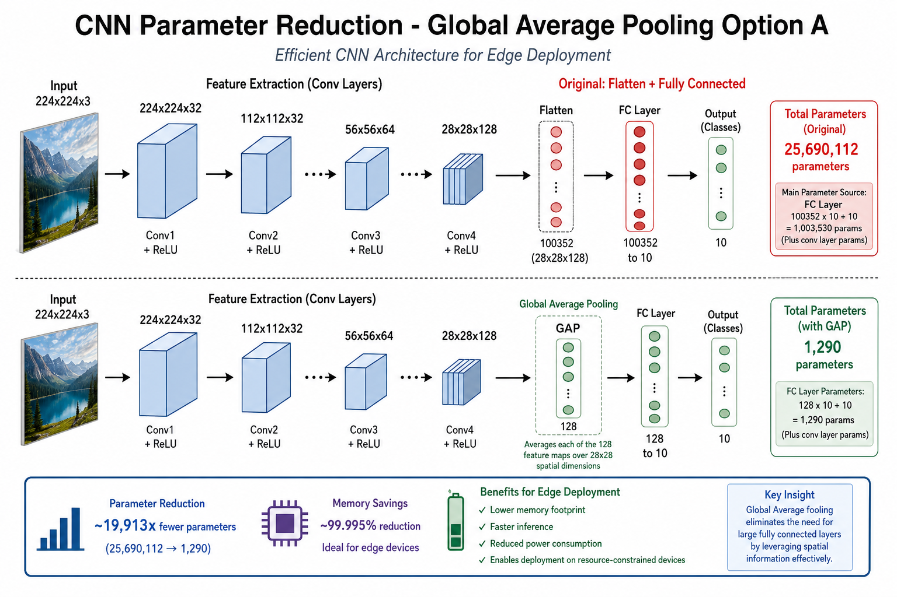
Transfer YES. L1=2432. L8=25.6M. GAP=1290 params. RF claim FALSE.
EC3 Q4 RNN/GRUHIGH PRIORITY
See PDF for full question text.

RNN=620, GRU=1860. Vanilla h=[0.80,0.10]. GRU h=[0.53,-0.24]. dL/dh1=0.81.
EC3 Q5 AttentionHIGH PRIORITY
See PDF for full question text.

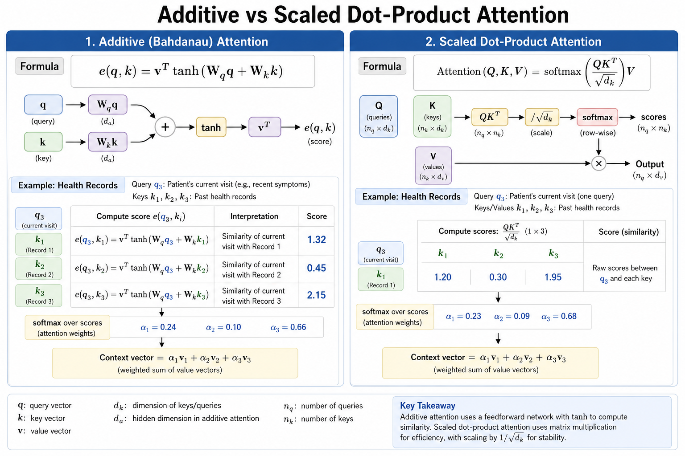
Dot-product context=[8,3]. Need causal mask. Additive context=[1.47,0.72].
EC3 Q6 TransformersHIGH PRIORITY
See PDF for full question text.
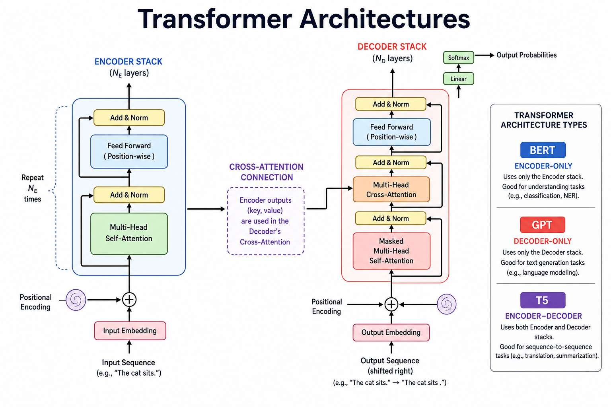
NER->BERT. Gen->GPT. Summarise->T5. Encoder~3.15M params. O(L2) fix: sliding window.
EC3 Q7 OptimizersHIGH PRIORITY
See PDF for full question text.
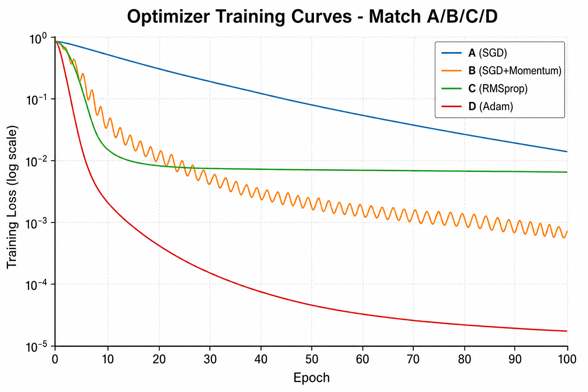

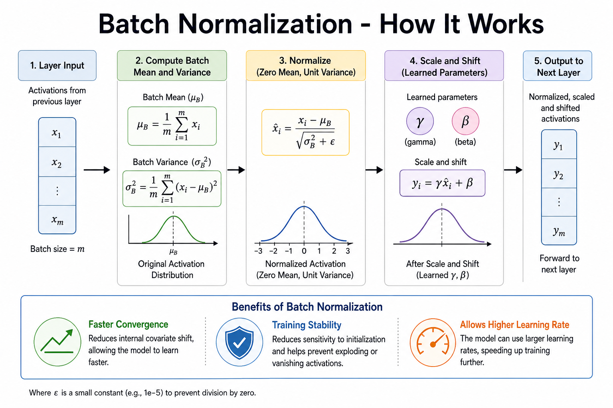
A=SGD B=Momentum C=RMSprop D=Adam. Run1 overfit->Dropout+L2. BatchNorm fixes Run4.
BCE Derivation
Chain ruleL -> dL/dy_hat -> dL/dz = y_hat - y
Memorize!
Weightgrad = (y_hat-y)*x
CCE Derivation
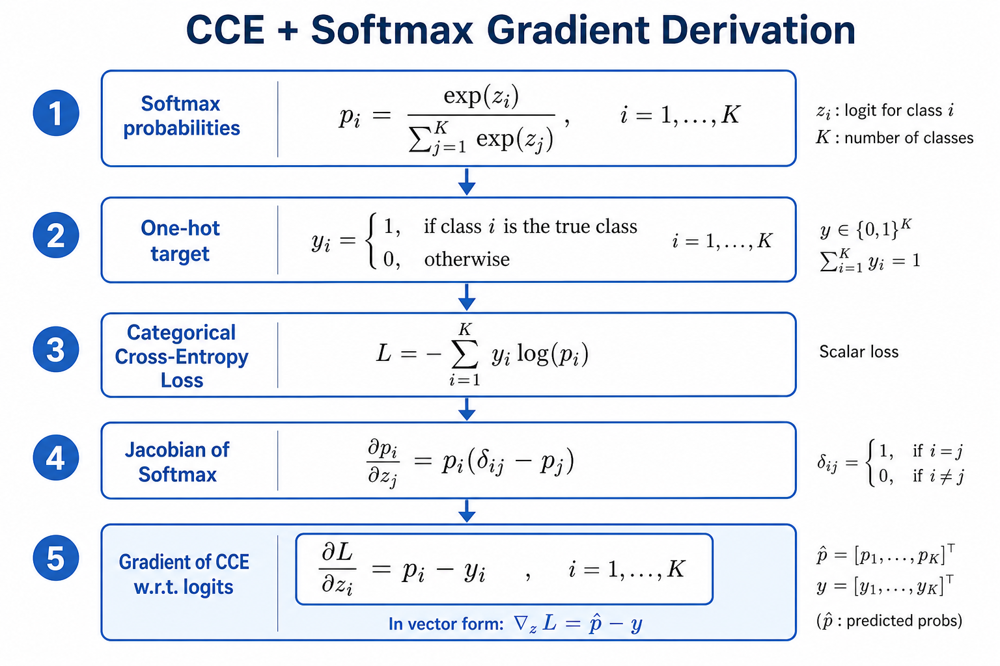
Jacobiandp_i/dz_j = p_i(delta_ij - p_j)
Resultgrad = p_hat - y
Same as BCE!